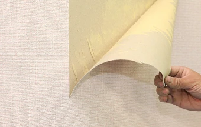
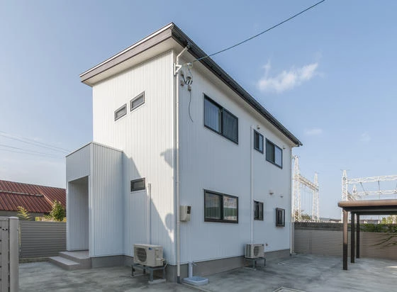
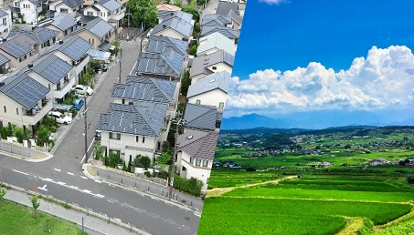
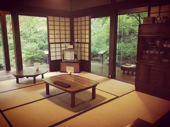
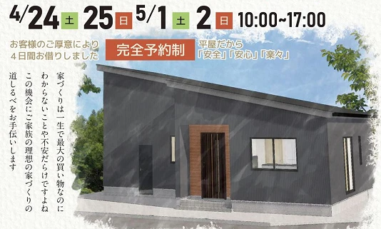
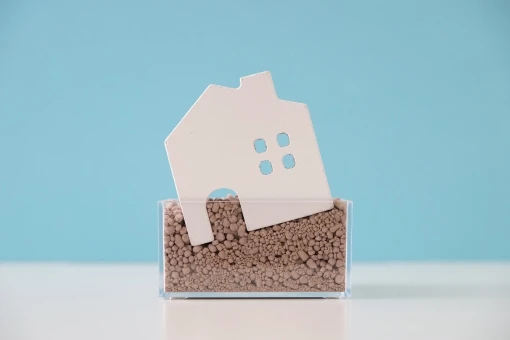

ビニールクロスと自然素材について
こんにちは。富山で自然素材にこだわるホンモノの家、フジ創アイノスです。 世の中の新築の内装の多くはビニールクロス仕上げです。 ビニールクロスが広まった理由は、何よりもコストの安さとメンテナンスの容易さです。 例えば、汚れ
続きを読む →FUJISOU AINOS JOURNAL
家づくりのこと、暮らしのこと。
日々の想いを、お伝えします。
新しい記事から 24・40ページ

こんにちは。富山で自然素材にこだわるホンモノの家、フジ創アイノスです。 世の中の新築の内装の多くはビニールクロス仕上げです。 ビニールクロスが広まった理由は、何よりもコストの安さとメンテナンスの容易さです。 例えば、汚れ
続きを読む →
こんにちは。富山で自然素材にこだわるホンモノの家、フジ創アイノスです。 フジ創ではOPENHOUSE-幸せづくり見学会-を開催しています 今回はこのネーミングについてご説明します。 １.幸せづくりとは 幸せは大きく分けて
続きを読む →
こんにちは。富山で自然素材にこだわるホンモノの家、フジ創アイノスです。 「その住宅ローン返済は適正なのか？」 生活費や食費をやたらと切り詰めたりおこづかいを減らして節約するのは、ストレスばかりを溜めてしまうことになるので
続きを読む →こんにちは。富山で自然素材にこだわるホンモノの家、フジ創アイノスです。 2019年3月にSMBCコンシューマーファイナンスが30歳〜49歳の男女1000名を対象に、『現時点で、どのくらい貯蓄が出来ているか？』を調査したと
続きを読む →こんにちは。富山で自然素材にこだわるホンモノの家、フジ創アイノスです。 資産形成のポイント① 住宅ローンを負担にしない 資産形成の原資をつくるためには、住宅ローンの返済額を無理に増やさないようにすべきです。 30年や35
続きを読む →こんにちは。富山で自然素材にこだわるホンモノの家、フジ創アイノスです。 金融庁の『老後2000万円問題』が大きな話題を集めましたが、2019年8月に公表された『年金の健康診断』の結果も看過出来ないものになりました。 これ
続きを読む →こんにちは。富山で自然素材にこだわるホンモノの家、フジ創アイノスです。 今日5月5日は「こどもの日」。 祝日法では、「こどもの人格を重んじ、こどもの幸福をはかるとともに、母に感謝する日」とされています。 こどもの日には、
続きを読む →
こんにちは。富山で自然素材にこだわるホンモノの家、フジ創アイノスです。 ✔︎南道路よりも北道路の方がいい？ 住宅地には、低層住居専用地域と中高層住居専用地域と住居専用地域の3つ（それぞれ1種と2種に分かれるので正確には6
続きを読む →こんにちは。富山で自然素材にこだわるホンモノの家、フジ創アイノスです。 家を建てる時、地域によって建築に対する制限が異なります。 例えば、"市街化区域"と"市街化調整区域"があるのですが、市街化調整区域は、市街化区域に比
続きを読む →
こんにちは。富山で自然素材にこだわるホンモノの家、フジ創アイノスです。 明日からGWですが、コロナ対策のため家にいる時間が長くなると思います。 家が及ぼす健康への影響は、意外に大きいものです。 断熱性、気密性、耐震性など
続きを読む →
こんにちは。富山で自然素材にこだわるホンモノの家、フジ創アイノスです。 今日は「昭和の日」ですね。「激動の日々を経て、復興を遂げた昭和の時代を顧み、国の将来に思いをいたす」と定められています。 昭和から今に至るまで、時代
続きを読む →
こんにちは。富山で自然素材にこだわるホンモノの家、フジ創アイノスです。 5月1日（土）・2日（日）は高岡市内免でモデルハウスの見学会を開催します。 １歩足を踏み入れた瞬間、『空気の違い』を全身で感じることができる自然素材
続きを読む →
こんにちは。富山で自然素材にこだわるホンモノの家、フジ創アイノスです。 敷地を余らせてしまう理由その3：コスパに優れているという当たり前 最後の理由が、2階建ての方がコスパに優れている、という理屈です。 逆に言うと、平屋
続きを読む →こんにちは。富山で自然素材にこだわるホンモノの家、フジ創アイノスです。 「建ぺい率」とは、その土地の上にどれくらいの大きさまで1階をつくっていいのかを示す基準なのです。 例えば、土地の広さが40坪で建ぺい率が60％の場合
続きを読む →
こんにちは。富山で自然素材にこだわるホンモノの家、フジ創アイノスです。 ✔︎散らかる原因その2：収納のつくり方が悪い 2つ目の原因が、収納のつくり方が悪いことです。 一般的な家は2階にスペースが余りがちなので、1階にあま
続きを読む →こんにちは。富山で自然素材にこだわるホンモノの家、フジ創アイノスです。 せっかく家を建てても、リビングダイニングキッチンがたくさんのモノでごった返してしまったら残念ですよね。 リビングダイニングキッチンは、家族みんながほ
続きを読む →
こんにちは。富山で自然素材にこだわるホンモノの家、フジ創アイノスです。 フジ創アイノスは、こどもの成長を一番に考えた自然素材の健康住宅をつくっています。 一般的に自然素材の家は高額で、購入を諦める若い夫婦がたくさんいます
続きを読む →
こんにちは。富山で自然素材にこだわるホンモノの家、フジ創アイノスです。 ✔︎地震に強く、住みやすく、使いやすい家のつくり方 地震に強い家にするために、そして同時に耐久性の高い家にするためには、「平屋」をベースとして考えて
続きを読む →こんにちは。富山で自然素材にこだわるホンモノの家、フジ創アイノスです。 耐震基準の最高等級は、数百年に一度起こる震度6〜7程度の地震の1.5倍の地震が起こったとしても倒壊や崩壊しないレベルである「耐震等級3」です。 そし
続きを読む →
こんにちは。富山で自然素材にこだわるホンモノの家、フジ創アイノスです。 ✔︎そもそも"子ども部屋"と呼ぶことがおかしい？ 広さや部屋数について、まず考えていただきたいのが"子ども部屋"です。 子どもは、まだ小さいうち、自
続きを読む →こんにちは。富山で自然素材にこだわるホンモノの家、フジ創アイノスです。 現在の日本人の平均寿命は、男性が81歳で女性が87歳と言われていますが、家づくりをする時には、この年齢まで暮らすことを前提として部屋の広さや多さ、そ
続きを読む →
こんにちは。富山で自然素材にこだわるホンモノの家、フジ創アイノスです。 今日はオレンジデーといって、夫婦や恋人の間で、オレンジ色のプレゼントを贈り合い、愛情を深める日だそうです。 今日富山では、新型コロナ感染拡大警報「富
続きを読む →
こんにちは。富山で自然素材にこだわるホンモノの家、フジ創アイノスです。 ✔︎予算の中で土地がなかった場合 エリアによっては、予算を絞ると選べる土地がほとんどないことがあるのですが、この場合、エリア変更が出来ないとしたら、
続きを読む →こんにちは。富山で自然素材にこだわるホンモノの家、フジ創アイノスです。 土地探しは、自分自身が土地にかけられる予算を把握した上で行うことが大切です。 正確な予算を知らないまま土地探しをしてしまうと、土地に予算を使い過ぎて
続きを読む →